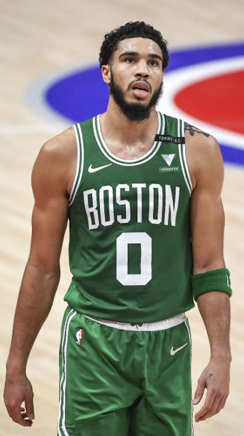

Jayson Tatum
Forward
Basic Info
Age: 24Height: 203 cm
Weight: 95 kg
Position: Small forward
Current team: Boston Celtics
College career
Before the start of 2016–17, Tatum missed 8 games due to a foot
injury. On December 3, 2016 in his Duke debut, Tatum recorded 10 points in a 94–55
win over Maine. On December 6, 2016, Tatum tallied 22 points and 8 rebounds in an 84–74
victory over Florida at the Jimmy V Classic. On December 12, 2016, Tatum was named ACC
freshman of the week. On December 21, 2016, Tatum scored 18 points, 8 rebounds, and 4 blocks
in a 72–61 win over Elon. On January 4, 2017, Tatum scored 19 points in a 110–57 victory
over Georgia Tech. On January 7, he recorded 22 points and 6 rebounds in a 93–82 victory
over Boston College. On January 21, Tatum scored 14 in a 70–58 win over Miami. On
February 13, Tatum earned his second ACC freshman of the week honor. On February 15, he
scored a season-high 28 points and had 8 rebounds in a 65–55 victory against Virginia. On
February 18, 2017, Tatum scored 19 points in a 99–94 victory over Wake Forest.[29] As the fifth
seed in the ACC Tournament, Duke defeated Clemson in the second round and Louisville in the
quarterfinals. On March 10, Tatum scored 24 points in a win over rival North Carolina in the
semifinals.[30] On March 11, Tatum tallied 19 points and 8 rebounds in a 75–69 victory against
the Notre Dame Fighting Irish, earning the Blue Devils the ACC Tournament Championship.
Tatum was named to the All-ACC Tournament team, after averaging 22.0 points, 7.5 rebounds, and
1.5 steals per game for the Blue Devils. As the #2 seed entering the NCAA Tournament, Duke
defeated Troy University in the first round, but exited early in a second-round loss against
South Carolina. Tatum averaged 16.5 points and 7.5 rebounds per game in the tournament. In
his freshman season for Duke in 2016–17, Tatum played 29 games and averaged 16.8 points, 7.3
rebounds, 2.1 assist, and 1.3 steals per game, and was named to the ACC All-Freshman team & a
third team All-ACC selection. Tatum had a successful freshman season at Duke, ranking fourth
in made free throws (118), rebounds (fifth), and free throw percentage (849.).
Proffesional career
Boston Celtics
Boston Celtics general manager Danny Ainge dealt away the team's No. 1
overall pick in the 2017 NBA draft to the Philadelphia 76ers in hopes that he could acquire
another valuable draft pick and still target the player he actually wanted, Tatum. They selected
him with the third overall pick, which they received from Philadelphia. He was the Celtics
second straight No. 3 pick for a small forward, following Jaylen Brown in 2016. During the
2017 NBA Summer League event in Utah, he displayed his abilities to effect, averaging 18.7
points, 9.7 rebounds, 2.3 steals, and 2.0 assists in nearly 33 minutes of action. Later, in Las
Vegas, Tatum produced similar results, averaging 17.7 points, 8.0 rebounds, 1.0 assists, and 0.8
blocks in nearly 32 minutes of action in the three games he was allowed to play. He was named to
the All-Summer League Second Team alongside Bryn Forbes, Cheick Diallo, Wayne Selden Jr., and
Kyle Kuzma.
In his NBA debut, Tatum recorded a double-double with 14 points and 10 rebounds as the team's
starting power forward in a 102–99 loss to the Cleveland Cavaliers. Tatum then recorded a
season-high 24 points in a win over the New York Knicks on October 24, 2017. He was named
the Eastern Conference's Rookie of The Month for December 2017.
The Celtics finished the season with a record of 55–27, entering the 2018 NBA playoffs as the
second seed in the Eastern Conference. In Game 1 of the first-round series against the seventh
seed Milwaukee Bucks, Tatum recorded a double-double with 19 points and 10 rebounds. In Game
4 he broke his playoff-high with 21 points, and then broke it again in Game 6 with 22. The
Celtics defeated the Bucks in Game 7 by a score of 112–96, with Tatum scoring 20 points.
